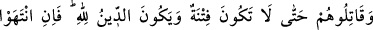
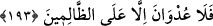
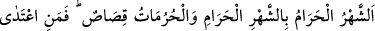
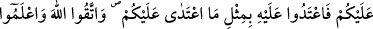
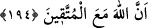

192. Eğer onlar (savaştan) vazgeçerlerse, (şunu iyi bilin ki) Allah gafûr ve
rahîmdir.
Kâfirlerin, Allah’ın rahmet ve mağrifetine lâyık olabilmeleri için sadece savaştan
vazgeçmeleri yeterli değildir, küfürlerinden de vazgeçmeleri gerekir. Küfürlerinde ısrar
ettikleri halde yalnız müslümanlara karşı savaştan vazgeçmeleri onlara, Allah’ın ne
rahmetini, ne de mağfiretini kazandırır. Çünkü rahmet ve mağrifetin temel şartı, İslâm ve
tevbedir.
193. Fitne tamamen yok edilinceye ve din (kulluk) de yalnız Allah için oluncaya
kadar onlarla savaşın. Şayet vazgeçerlerse zâlimlerden başkasına düşmanlık ve
saldırı yoktur.
Arap Yarımadası’ndaki putperestlerden cizye ve haraç kabûl edilmez. Sadece
müslüman olmaları teklif edilir; eğer İslâm’ı kabûl etmezlerse öldürülürler.
Fakat sizinle savaştıktan sonra şirkten “vazgeçerlerse, bilin ki düşmanlık ancak
zâlimlere karşıdır” artık zâlimlerden başkasına düşmanlık ve zulüm yoktur.
Yâni savaş ve şirkten vazgeçenlere zulmetmeyin. Çünkü yalnız zulmedenlerin
zulümlerine karşılık vermek güzeldir. Burada cezânın kendisi hazfedilmiş, onun yerine
cezânın illeti getirilmiştir. İllet hükmü gerektirdiği için, illetle hükümden kinâye
yapılmış ve âyette müslümanlara sanki şöyle denilmiştir: Eğer şirkten vazgeçerlerse,
artık onlara zulmetmeyin. Çünkü zulüm, yalnız zulmedenlere mahsûstur. Halbuki onlar
zâlim değiller. O halde onlara zulüm ve düşmanlıkta yoktur.
“Kötülüğün cezâsı, yine onun gibi kötülüktür” (eş-Şûrâ, 42/40) âyetinde olduğu
gibi, bu âyet-i kerîmede zulümden ve o zulmün karşılığından bahsedilmiştir.
Müşriklerin Allah’a şirk koşma ve müslümanlarla savaşma zulmünden ve bu zulümleri
karşılığında verilecek ölüm cezâsından söz edilmiştir. Gerçekte kâfirlere verilen bu
cezâ zulüm değil, hak ve adâletin tâ kendisidir.
194. Haram ay haram aya karşılıktır. Hürmetler (dokunulmazlıklar) karşılıklıdır.